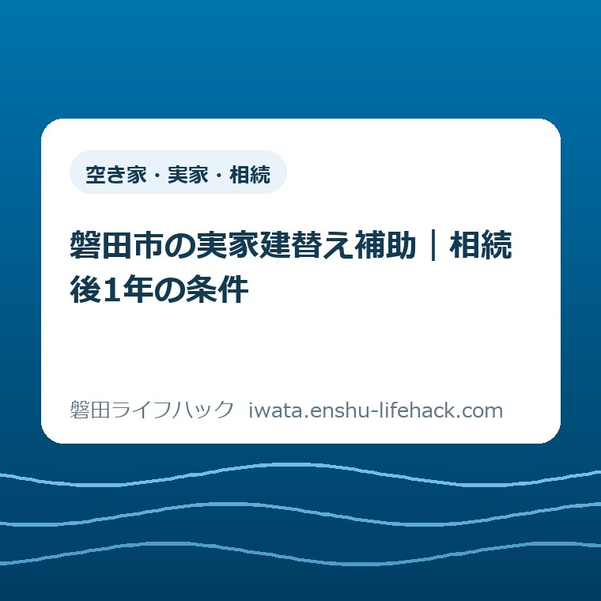

空き家・実家・相続
磐田市の実家建替え補助｜相続後1年の条件

この記事の要点
Q. 相続した磐田の実家を建て替えたい。いつまでに何をすれば補助の対象？
A. 磐田市の既存住宅取得等事業費補助金では、若者・子育て世帯が相続住宅を取得から1年以内に除却し、新築して住む事業が対象です。補助は除却費の2分の1で上限があります。年度内の着手・完了と申請順序も必要です。適用は世帯・住宅・日程で変わるため、今日は取得日を資料で確かめ、市へ確認してください。
実家の建替えは、家族の予定を動かす仕事でもある
磐田市の実家を相続し、建て替えて住む計画には、世帯や住宅ごとの条件確認が欠かせません。子育て中の引っ越しは、間取りを決めるだけでは済まない仕事です。今の住まいの退去、通勤、子どもの通学、家財の片づけが同時に動きます。
親の家を受け継ぐまでに、書類を集め、親族へ連絡し、仕事を休んだ方もいるはずです。その負担を抱えたご家族に「補助があるから急いで」とだけ言うのは、私は乱暴だと考えます。必要なのは、残っている時間を正確に知ることです。
2026年9月15日に磐田市の公式案内を確認しました。秋に実家再建を考えるなら、家の図面の前に日付を並べると話が整理できます。この記事の秋という切り口は、住み替えの検討時期を指します。秋から制度が改正されたという意味ではありません。
大石浩之（磐田市／不動産業）として、ここでは申請書の欄を順番に説明するよりも、相続と工事と引っ越しの期限がぶつかる場所を読み解きます。読んだ日の成果は建替えの決断ではなく、相続で取得した日を確認できることです。
対象世帯と費用——新築代が半額になる補助ではない
磐田市の「既存住宅取得等事業費補助金」は、若者世帯・子育て世帯の建替えを対象事業に含めています。市の既存住宅取得等事業費補助金の案内では、相続住宅を取得から1年以内に除却し、住宅を新築して居住する事業とされています。
除却とは、ここでは既存の住宅を取り壊すことです。相続した家を壊せば、その後の使い道を問わず対象になるという説明ではありません。新しい住宅を建てて住むことまでが、建替えという一つの事業に含まれます。
若者世帯は世帯全員が39歳以下、子育て世帯は中学生以下の子どもが同居する世帯です。子どもには胎児も含まれます。「子育て世帯」の条件は、親が39歳以下という条件とは別です。世帯の年齢や構成の判定時点は市に確認してください。
市が示す既存住宅は、人が住んだことのある戸建てです。現に使用していないか、3カ月以内に使用しなくなる住宅とされています。親族が住み続けている実家では、その方の転居予定も関わります。相続済みという一点だけで対象と決めつけないことです。
建替えの補助対象経費は除却費の2分の1です。新築工事費の2分の1ではありません。「建替え補助」という短い呼び名から、住宅全体の建築費を半額にできると受け取ると、資金計画が大きくずれます。対象となる費目を先に分けてください。
若者・子育て世帯の交付限度額は、市外から転居する区分で150万円、市内転居等の区分で100万円です。前者には世帯全員が1年以上市外に居住している条件があります。上限額がそのまま受け取れる金額ではなく、対象経費の計算結果にも制限されます。
計算の考え方だけを示す仮例として、市が認める除却費が160万円なら、その2分の1は80万円です。市内転居等の上限100万円を下回っても、差額の20万円を追加で受け取る仕組みではありません。この160万円は解体相場や見積額の提示ではありません。
ほかにも、事業完了日から10年間の居住見込み、市税の滞納がないこと、自治会への加入などの要件があります。市内の別の持ち家に関する条件もあります。転勤の予定や現在の住宅の所有状況があるご家族は、建替え先だけでなく世帯全体の状況を伝えて確認する必要があります。
取得から1年と年度内完了は、別々に数える
磐田市の建替え補助を検討するときは、住宅の取得から1年以内という除却の条件と、年度内に事業を着手・完了する条件を分けて確認します。一方を満たしても、もう一方が自動的に満たされるわけではありません。
市の対象事業欄で「取得から1年以内」が直接かかっているのは除却です。家族が建替えを思い立った日や、施工会社へ相談した日を起点にする案内ではありません。検討を始めてから丸1年あると考えないようにしてください。
一方で、公式ページの文章だけでは、個々の相続でどの資料の日付を取得日と認めるかまでは読み切れません。登記を申請した日、登記が終わった日、遺産分割の話がまとまった日を、都合よく起点に置くことは避けたいところです。
相続の書類には複数の日付が出てきます。今日は登記事項証明書などを手元に置き、「相続で取得した日を示すのはどこか」を確かめてください。資料同士の日付が異なるなら、そのまま市へ伝えます。日付を一つに決めるために、家族の記憶だけで空欄を埋める必要はありません。
登記自体の役割が混乱している場合は、相続登記と相続人申告登記の違いも参照できます。登記の期限に対応できたことと、この補助の取得後1年の条件を満たすことは別の話です。権利関係の個別判断は司法書士などの専門家に確認してください。
市の注意欄には、年度内の4月1日から3月31日までに事業着手から事業完了まで行うことが必須とあります。2026年度なら2026年4月1日から2027年3月31日です。2026年秋から1年間という意味ではありません。
補助要件には、原則として交付決定のあった年度の3月31日までに完了報告書を提出できることも挙がっています。工事が終わる予定日だけでなく、報告に必要な書類がそろう予定も確認対象になります。年度の最終日に完成すれば必ず間に合うとは言い切れません。

たとえば取得日が2026年度の後半にある場合、取得から1年の範囲には2027年度が含まれ得ます。しかし、2026年度の事業として何をどこまで終えるかは別に確認が要ります。「取得から1年あるから、年度をまたぐ工事でも大丈夫」とは判断できません。
秋の工程表——申請、取り壊し、入居を一本につなぐ
磐田市が示す補助金交付の流れは、申請、交付決定、事業開始、事業完了、完了報告、交付確定、指定口座への支払いという順序です。秋から組む工程表にも、工事だけでなく市の手続きと支払いまでを入れる必要があります。
市の案内は、交付申請後の事業にかかる経費が補助対象になるとも説明しています。だからこそ、契約や着工を先に済ませ、あとから補助を付け足す前提にはしないでください。自分の建替えではどの行為が事業開始になるのかを、契約前に市へ確かめるのが安全な順序です。
公式ページには、建物購入やリフォームについて着手日と完了日の例があります。ただし、その例を相続住宅の建替えへそのまま当てはめることはできません。新築の引渡し、居住開始、除却の完了がどう扱われるかは、計画を示して確認してください。
2027年4月の入学・進級に合わせて引っ越したい家庭では、春という一語を分解して考えます。3月中に住み始めるのか、4月からなのかで年度が変わります。学校に合わせた希望日と、補助上認められる完了日を、別の欄に書いて照合する必要があります。
私なら、施工会社から示された工程に「家財を出せる日」「仮住まいへ移れる日」「新居へ入れる日」を重ねて考えます。工期が成立しても、家族が移れるとは限りません。平日に動く人が一人に集中するなら、その人の仕事の予定も工程の条件になります。
片づけを工事の前日に寄せると、残す物を選ぶ時間まで縮みます。家財整理の段取りは、実家じまいと粗大ごみの整理を扱った記事も参考になります。家財の処分費をすべて除却費に含められると考えず、見積書の項目を分けて市に確認してください。
磐田市で地面を掘る工事を計画する場合には、敷地と埋蔵文化財の関係も工程に影響します。市の開発に伴う埋蔵文化財の取り扱いでは、遺跡の範囲で掘削する計画について、設計前の早い時期に文化財課と協議するよう案内しています。
遺跡の範囲の確認には地番と場所を示す地図が必要で、来課・電子申請・メールに対応しています。電話で範囲を判定してもらう扱いではありません。家がすでに建っていることだけを理由に、建替えの確認が不要とは判断しないでください。
文化財に関する詳しい段取りは、磐田市の埋蔵文化財と工事前の確認に分けてあります。ここで伝えたいのは、補助の窓口だけで敷地に必要な確認がすべて終わるわけではない、という工程上の注意です。
良い点——受け継いだ家を住まいへ戻す費用を支える
磐田市の建替え補助の良い点は、住宅を買う場合だけでなく、相続した住宅を建て替えて住む場合にも支援の入口があることです。相続では購入代金が発生しなくても、古い家を除却して住み始めるための費用は残ります。
私は、その除却費へ目を向けている点を評価します。家を受け継いだことと、家計に余裕があることは同じではありません。新居の準備に必要な支出の一部が軽くなるなら、家族が実家で暮らす選択を具体的に比べる材料になります。
子育て世帯に胎児も含める定義があることも、住まいの計画と関係があります。出産前から部屋数や家族の移動を考える家庭にも、自分たちが相談対象かを確かめる入口があります。出生後でなければ相談できないと、自己判断で候補から外す必要はありません。
申請時の住民票や市税完納証明書等については、市が情報を内部利用することに同意すれば、一定の書類の提出を省略できる案内があります。住民票の省略は市内に住所がある方が対象です。
私は、書類を取りに行く一往復が減ることも、家計と段取りへの支援だと考えます。
注文したい点——家族が必要なのは、自分の家の締切
磐田市の建替え補助について私が注文したい点は、取得後1年、年度内完了、完了報告の期限を、自分の家の日付に置き換える負担が残ることです。各条件が書いてあっても、家族の工程表に重ねる作業は別に必要になります。
私は、相続による建替え専用の記入例があると助かると考えます。取得日、申請予定日、除却予定日、新居の入居予定日を一枚に並べる形です。住宅購入やリフォームの例が用意されている利点を、相続後の再建にも広げてほしいという要望です。
予算の範囲内で交付するという条件にも注意が要ります。2026年9月15日に見た公開ページだけでは、その日の予算残額や、個々の申請を受け付けられるかは確定できません。この記事でも「まだ間に合う」「枠が残っている」とは書けません。
市への相談では、条件の意味と受付の見通しを分けて聞くと整理できます。制度上の対象に入りそうでも予算が確保されたとは限りません。私は、家族が使える見込みをつかむ前に、補助予定額を住宅ローンや手元資金の不足分へ組み込まないようにしたいと考えます。
大石の視点——補助金に家族の引っ越しを合わせない
大石浩之は、実家の建替え補助を、家族が回せる日程と家計の中で使えるかどうかで考えます。補助金に家族の引っ越しを合わせるのではなく、家族が回せる日程に補助金が乗るかを見る。私はこの順番を変えたくありません。
私はこう考えます。紙の左側に除却費、右側に仮住まいと引っ越しの支出を置いてみる。補助に合わせるために仮住まいが延びるなら、その増えた支出も差し引いて判断する。これは実際の相談事例の紹介ではなく、私の判断方法です。補助額だけを大きく書いた紙では、家族の負担が見えなくなります。
年度内に終えられそうな計画をどこまで勧めるか、私は迷います。多少の調整で無理なく収まる家もあるでしょう。ただ、天候や工事の変更を一切見込めない日程まで「間に合う」と扱う気にはなれません。見通しと確約を混ぜないことが、ここでの私の線引きです。

補助金の支払いは、市の流れでは事業完了と報告、交付確定の後です。除却業者への支払い期限と同時になるとは限りません。請求を受ける時期と、補助金を受け取る時期に差がある前提で、手元の資金を確認する必要があります。
建替えの条件が合わない場合も、実家をどうするかという相談そのものが終わるわけではありません。住み続ける方法を含めて考え直す際は、耐震・解体の手続きガイドから別の確認先も探せます。それぞれの制度の適用は改めて確認が必要です。
対案・結論——今日は相続で取得した日を確認する
磐田市の相続住宅の建替えを考えるご家族が今日できる一歩は、住宅を取得した日を資料で確認することです。工事の見積依頼も家財の処分も、その場で全部始める必要はありません。まず期限を数える出発点をはっきりさせます。
登記事項証明書などの相続関係資料を開き、取得日を示すと思われる箇所と資料名を一緒に記録してください。記載を読み取れなければ、「不明」として残します。親族が言った日付を正式な取得日として転記するより、資料のどこが分からないかを説明できる方が相談は進みます。
市へ確認するときは、「相続した住宅を建て替えて住む予定です。補助の取得日は、この資料のどの日付で判定しますか」と聞けます。続けて相談できる段階になったら、世帯構成と除却・入居の希望日を示し、年度内完了と申請順序を確認します。
相談先は磐田市建築住宅課の住宅管理グループです。公式案内の電話は0538-37-4851、所在地は磐田市国府台3-1の西庁舎2階です。来庁する予定を組むときも、何の資料が必要かを先に聞けば、家族が同じ書類を取りに戻る負担を減らせます。
完了報告には、相続による建替えの場合の建物の閉鎖事項証明書又はこれに準ずるもの、費用の支出を証する書類、施工前後の写真などが挙げられています。工事が終わってから用意できない記録もあるため、申請時に誰がどの資料を残すかを確認しておくと安心です。
取得日が分かれば、年度の期限と並べて次の相談ができます。補助を使うために建て替えるのではなく、住む計画を確かめたうえで利用できる支援を選ぶ。そのための最初の材料が、今日確認する一つの日付です。
FAQ——相続後の建替えで迷う3問
磐田市の実家建替え補助で混同しやすい取得日、対象経費、年度の区切りについて答えます。個々の住宅や世帯に適用されるかは、資料と計画を示して市へ確認してください。
相続登記が終わった日から1年以内なら対象ですか？
市の案内は、相続住宅を取得から1年以内に除却する条件です。登記完了日を起点とするとは書かれていません。個々の相続で認められる取得日を、登記事項証明書などの資料を示して磐田市へ確認してください。登記の義務への対応と、補助金の期限判定は別の確認です。
相続した実家の新築工事費も半額になりますか？
建替え事業で市が示す対象経費は除却費の2分の1です。新築工事費の半額ではありません。若者・子育て世帯の上限は、市外転居の条件を満たす区分で150万円、市内転居等で100万円です。実際の交付額は対象経費と上限で決まり、見積書のどの項目が対象かは市へ確認が必要です。
2027年春の入居なら2026年度の補助を使えますか？
春という時期だけでは判断できません。2026年度は2027年3月31日までで、市は年度内の着手・完了を必須としています。原則として同日までの完了報告も必要です。4月の入居を2026年度内と扱うことはできません。建替えの完了日が何で判定されるかを、除却・新築・入居の予定とともに市へ確認してください。
参考にした公式情報
- 既存住宅取得等事業費補助金／磐田市（2026年9月15日確認、2026年3月31日更新）
- 開発に伴う埋蔵文化財の取り扱い／磐田市（2026年9月15日確認、2026年4月1日更新）

最終確認日：2026-09-15 ／ 本記事は公表情報と執筆者の見解を分けて記載しています。制度・数値・公開状況は変更される場合があるため、登記・相続の個別判断は司法書士などの専門家に確認してください。補助の適用と最新情報は、最後に必ず磐田市の公式ページでご確認ください。